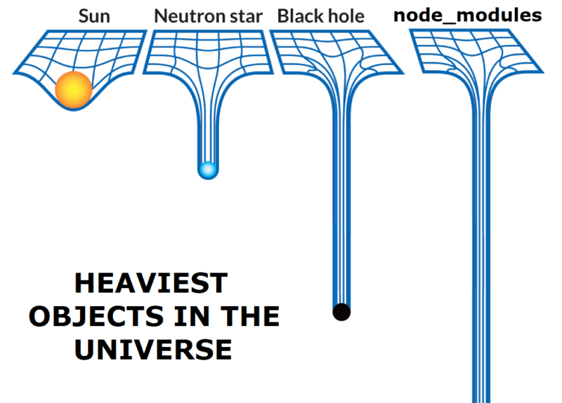

Agenda
- VSCode
- Extensiony
- Google Chrome
- NodeJS & NPM
- GIT
- GIT & VSC
VSCode
- Overview - czyli co gdzie jest
- Ultraważne skróty np: ctrl + p
- Extenstiony
- Ustawienia
- Parę skrótów klawiszowych: multikursor, ctr + spacja etc.
Przeglądarka
- Playground - plac boju - "środowisko uruchomieniowe"
- Codzienne narzędzie pracy devtoolsy - overview zakładek
NodeJS - Instalacja - Overview
- Node jako środowisko urchomieniowe
- Node jako "technologia backendowa"
- Node jako środowisko developerskie
- NPM jako rejestr - baza danych
- NPM jako strona npm
- NPM jako narzędzie
-
Setup projektu
- npm init
- package.json
- package-lock.json
- node_modules
- npm install i inne
- NPM alternatywy
-
CLI - command line interface
- npm init
- npm build
- npm ci
- npm i
- npm link
- npm dedupe
- npm pack
- npm run < script_name >
- npm audit

GIT
- GIT - Repozytorium - intro - kontrola wersji
-
Inicjalizacja
-
Repo zdalne